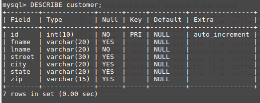

FULL STACK!
Created by Wannah Hauchope / May 2017
I want to be a "Full Stack" web developer - but what does that mean?
Task List for Checkpoint 01:
-
Use Google fonts
-
Use a good, relevant background picture
-
Link to sites or pages for more info
-
In an INTERESTING (not boring!) way explain "full"
-
In an INTERESTING (not boring!) way explain "stack"
-
In an INTERESTING (not boring!) way explain "LAMP stack"
-
Make in-line links to the above key words used in these explanations
-
WHEN DONE WITH THE ABOVE, GET A CHECKPOINT GRADE!
Task List for Checkpoint 02:
-
Explain "Database" in general using both text and illustration--
be "interesting," not boring! -- do a little Google research
-
Explain MySQL -- text and illustration--
do a little Google research
-
Illustrate a typical DB table -- use and illustration
on this page, not a clickable page WE WILL DO THIS TOGETHER
-
List and explain the mysql CLI steps to create a DB, table, records... WE WILL DO THIS ENTIRE STEP TOGETHER
-
When done, get a grade for this checkpoint!
What does "full" in Full Stack mean?
Full means that when you are developing code for a website,
you develop from both ends. The front end, what the user sees on their computer,
or from our perspective, the "client" computer. And the back end,
the information sent from the server computer (the developers computer)
to the front.
What does "Stack" in Full Stack mean?
Stack means that multiple programs are used
(a "stack" of programs).
The front end requires HTML5, CSS3, and JavaScript.
From the back end we use PHP, and mySQL.
There is also a LAMP stack on the server computer.
What does "LAMP Stack" mean?
(turn into own words)
LAMP is a stack used for our web page server - remember, a server sends web pages
LAMP stands for:
L = Linux, which is the sbasis of our server operating system
A = Apache, which is our web server
M = MySQL, the database we us
P= PHP, which is the programming language we use on the server side
Explain Database: the organized way to save data on a server. It is necessary for all businesses in order to track employees, customers, products, services, suppliers, etc...
Explain MySQL: the 2nd most-used database in the entire world. Oracle is number q because it offers professional support, but it is a paid service. MySQL is free. The inventor of MY SQL...
-
compsci@compsci ~ $ mysql -u root -p
-
Enter Password:
-
mysql>
-
mysql> show databases;
-
mysql> CREATE DATABASES a4_wauchope_16may;
-
mysql> SHOW DATABASES;
-
mysql> USE a4_wauchope_16may;
-
mysql> CREATE TABLE student_info (
-> id int(8),
-> fname varchar(20),
-> lname varchar(20)
-> );
-
mysql> DESCRIBE student_info;
- mysql> DROP DATABASE a4_wauchope_16may;
- 